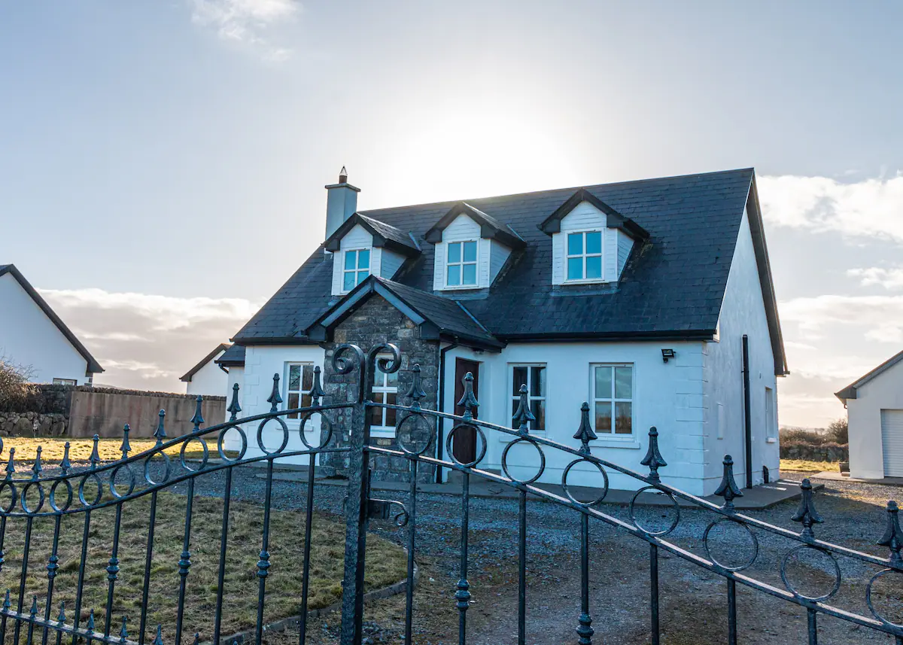

Entire home in Kinvara, Ireland
Welcome to Rockfield Cottage, nestled in the heart of the burren just 5 kms from the beautiful village of Kinvara. Immerse yourself in the beautiful scenery and rich history that the wild Atlantic way has to offer while enjoying modern comforts in our newly renovated cottage. Surrounded by beaches and stunning natural beauty, this memorable getaway is perfect for those seeking serenity in a unique setting.
The space
The cottage has been designed with relaxation and comfort in mind, it is spacious, stylish, light-filled and restfully decorated with a focus on high quality, Irish made and eco products.
- Cozy log fireplace and central heating for your comfort with fire logs provided
- Fully equipped kitchen with all cooking essentials, microwave, oven, coffee machine, air fryer etc
- Complimentary local food hamper on arrival including a bottle of red wine
- Spacious living room with a smart tv, sky and free WiFi
- Beautiful sun room with board games and reading material
- 3 king beds and 2 single beds all with plush linens and goose down duvets and pillows
- High-vis vests provided for the safety of those wishing to walk beneath the stars (or to the local pub)